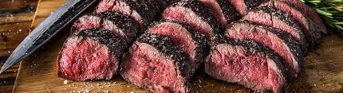

Roasted Venison

This is an easy and eye catching preparation on par with any fine cut of beef. This can be the center piece the meal or cut small and used as a appitizer.
Be sure to leave this roast rare to medium rare. Cooked any more and the cut becomes tough and much less delicious.
The cut can be anything from the hind quarter or the backstrap or even a section of the front should with bone in.
Having a quality meat thermometer is a must when cooking wild game. You are shooting for 125 degrees for rare.
- 1-5lbs cut of venison from any main muscle group could be bone is or out. Silver skin and excess removed
- Salt and Pepper
- Cast iron pan
- Cooking oil with high smoke point
- Pat dry the venison and salt and pepper it liberly
- Pre-heat oven to 375 degrees
- Heat cast iron over high heat until scorching hot
- Add roast to pan and sear on all sides including the edges
- When over is up to temp add the pan with the roast and set timer for 5-7 minutes depending on size of roast
- When time is up check for doneness with meat thermometer
- Serve hot with a nice finishing salt